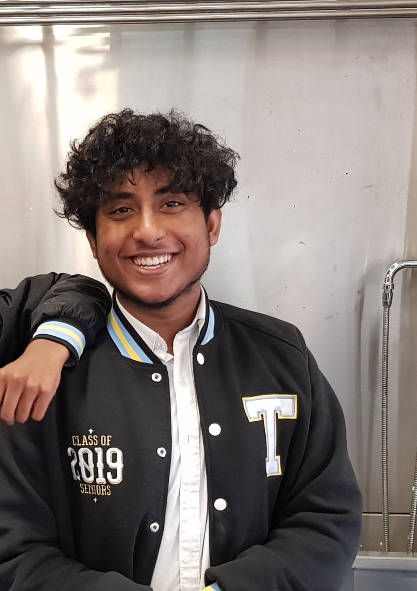
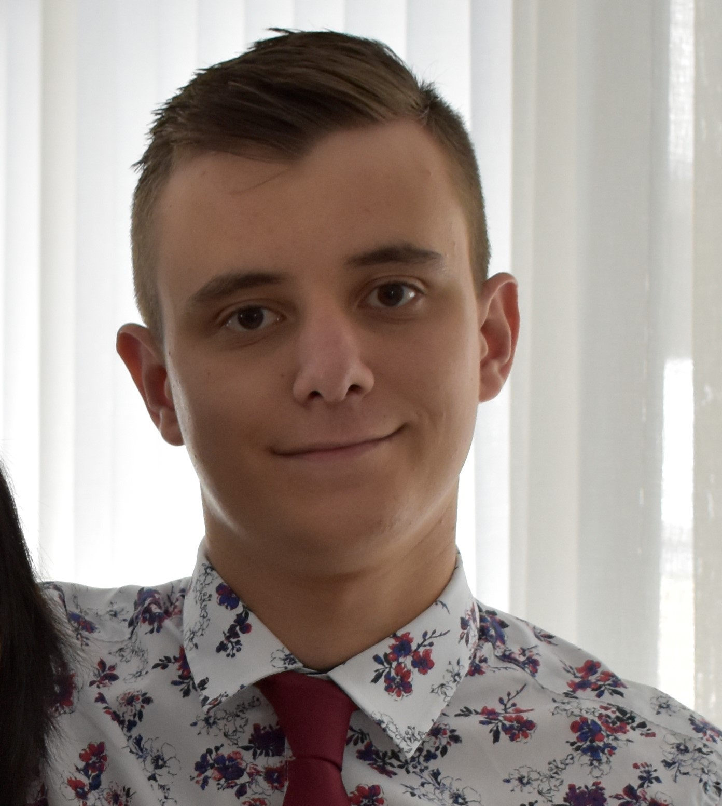
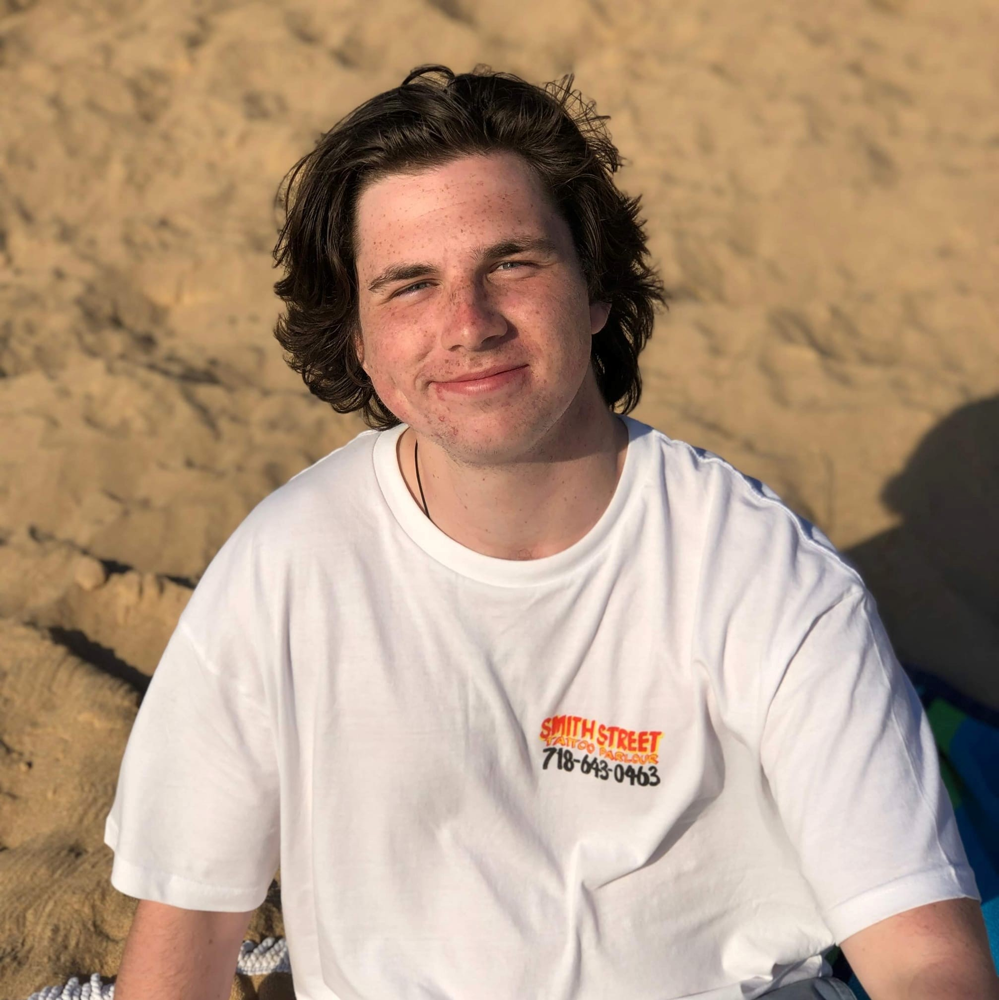
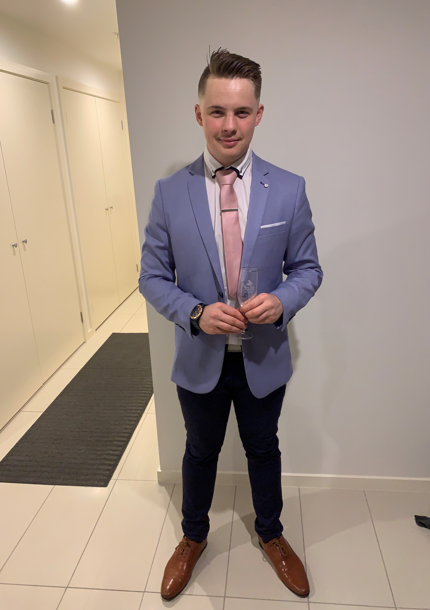

My name is Ahnaf Zaman and I am currently learning the Bachelor of I.T at RMIT. I was born in Bangladesh and
moved to New Zealand when I was 1 year old and then
to Australia at 15 where I graduate year 12. My hobbies include playing video games and going for long walks
at the weekends and I am interested in machine learning
and artificial intelligence as I see that being part of our everyday life in the future and I want to learn
about it in order makes contributions to the field.
I have a few experiences with i.t mainly setting up simple networks and building PC's and have experience
with HTML and CSS as well as python and java.

Student number S3812496. I am born in Australia with one half of my family being born in Argentina. My
hobbies include competitive Counter Strike GO where I play for the
RMIT White CSGO team, my other hobby is riding and working on my motorcycle. My interest in IT is on the
software development / software deployment side. I currently work at an
MSP / Retail store in Bacchus Marsh called MyTech where I have managed the store for 6 months. There I have
installed servers repaired pc's both software and hardware,
and had some experience setting up web hosting for clients including cPanel use.

Hey! My name is James Henderson and I am studying a Bachelor of Information Technology at RMIT university.
My family history consists of 1800s English/Irish settlers migrating to
Byron Bay and settling in Ballarat during the gold rush. I speak a mix of English and Auslan (Australian
sign language) at home with the primary language being English. I graduated
high school last year at CBC St Kilda where I chose Legal Studies, Computing - Informatics, Further
Mathematics, Psychology, English and CISCO Networking as my year 12 subjects.
I am quite passionate about water sports and I regularly partake in hobbies such as swimming, surfing and
lifesaving. I used to play hockey, AFL and chess for my high school's teams and eventually
became an accredited U13s football coach. I have also recently joined the RMIT surfing and ultimate frisbee
clubs.

Hello, my name is Joshua Kreppold! (student 3838911) I am from the eastern suburbs Melbourne Australia and
am studying a Bachelor of Information technology at RMIT.
I completed year 12 in 2019 at Yarra Hills secondary collage where I've had some IT experience coding. We
worked with php7 and the problem-solving methodology in the IT Software development class.
Programming interests me because of its creative potential, but I am also taken in by User centered design
because of the process of making something usable for other people.
In my spare time I enjoy playing in the Vrl rugby competition with the boys from the Eastern Raptors, and I
also enjoy playing video games when I can.

My name is Julian Chessari and I currently studying a bachelor of information technology at RMIT university.
My background is Italian as my grandparents were born there but then immigrated to Melbourne Australia in
1938, I only speak English though. I graduated Greythorn primary school in 2013 and graduated Balwyn High
School
in 2019 studying English, further mathematics, accounting, economics and legal studies. My main hobbies
include playing games such as counter strike global offensive and rocket league on my PC. I
also play basketball and AFL in my free time either at home or at a park.
The ideal jobs for the individual members is as follows:
Auditory Learner
Score: 12/20
I believe that I would be quite valuable to the group because I am good at taking others opinions and trying to reach a middle ground of implementing multiple ideas to make everyone's input valid and ultimately building a better solution because of that. Although my test says Introverted i think of myself as a person that will put myself out there to better the groups results.
THE MASTERMIND - INTJ
Score 16/20
In the process of initiating new ideas or projects I might have a better idea of processes or concepts if presented visually such as a chart, slides or pictures explain what the group might want to do with the project and how to proceed. When examining other I tend to write down suggestion that might be useful or I see as interesting and might examine those ideas on my spare time. When having trouble, I am most likely to do a face to face meeting and communicate via asking questions to other group members and overall tend to steer towards visual style of learning.
THE CAMPAIGNER - ENFP
I think it is quite important to know the test outcomes of each group member and use that to an advantage when pitching ideas or explaining concepts to different group members. As a hands on learner myself I believe I would benefit heavily from adapting my methods of explaining things to a more auditory or visual setting to suit the needs of my group. This deeper understanding of my group would allow me to more thoroughly plan ideas out as I must develop them for different mediums (e.g. an auditory pitch or a visual graph). After also having a better understanding on what sort of Myer Briggs personality types compliment mine, I know that more logical minded people tend to work quite well in a group with me as it allows for my more creative and idea focused mindset to be interpreted practically and encourages the challenging of my ideas to create a better product.
Overall, I feel that the results from all three online tests do line up to match my characteristics. I would usually describe myself as hands on and a logical thinker, the results from all three tests support this. Within a group setting I feel knowing this information could be helpful because it means tasks may better be allocated to those with the right strengths for the role. I also believe that knowing each other’s strengths helps us get to know each other better, and that in turn means we can work more efficiently together.
Logistician - ISTJ
Visual
Based off my results from these tests my behavior in a team could be different to other people. As an introvert I am more likely to shy away from group tasks or big group tasks, maybe opting to work with only 2 or 3 other people. My behavior may show that when making decisions I will primarily base them off facts rather than personal concerns. Results based off the learning style test suggest I am more of a visual learner than anything else suggesting that I will learn best when information is presented in a written language format or in another visual format such as pictures or diagrams. The big five personality test suggests that I am organized which will help in groups and that I am determined to reach a goal. It also suggests that I experience a great deal of empathy and tend to get satisfaction out of serving and taking care of others and am trusting and forgiving which means I am able to work with people very easily and they can work with me fairly easily with little social complication arising.